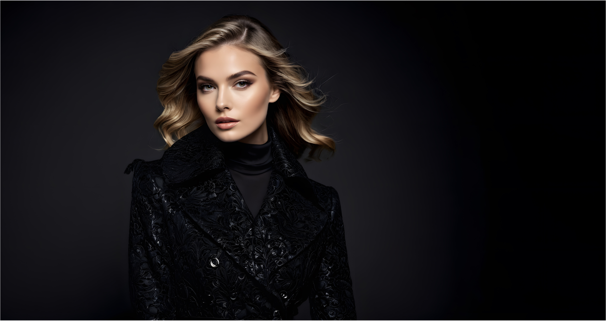
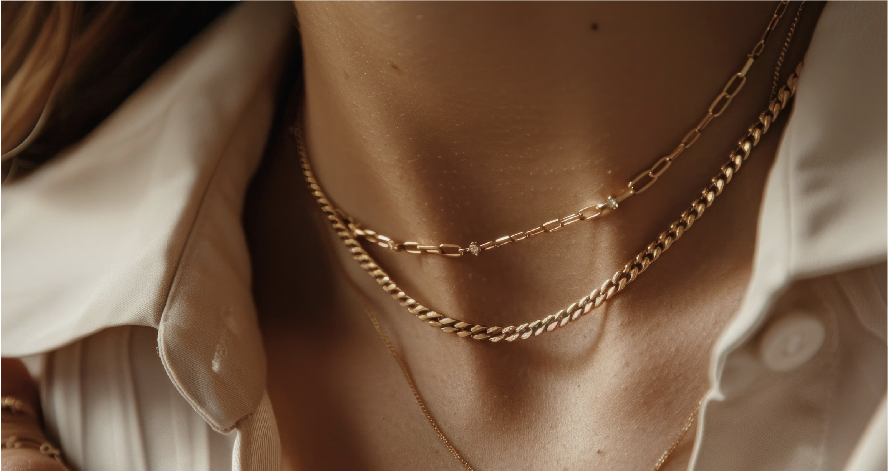

05 July 2024

The Fun, Fearless Female of the Year award was awarded to Kayla Itsines (2015), Nicole Scherzinger (2012), Mila Kunis (2011)...

05 July 2024
Cosmopolitan Men released a video on The Making of the World's Sexiest Calendar in 1994 followed by a 14-month Cosmopolitan...

05 July 2024
Cosmopolitan releases a Male Centerfold issue every few years that features hot male celebrities from the United...